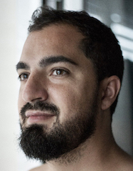

Schedule
Replicating the Success of REST in Event-Driven Architecture
Keynote: Friday, May 31st
During this talk, Fran will share his experience and vision on how to improve the event-driven architectures ecosystem. In the past years, with the rise of technologies like IoT and Microservices, more and more people are adopting event-driven architectures (EDA). However, the maturity of EDA is not yet comparable to REST. We'll have to make a tremendous effort in the upcoming years if we want this architectural paradigm to succeed and get the most out of it.
 Fran Méndez Fran is the founder of the AsyncAPI Initiative. He’s a software engineer with a strong focus on event-driven APIs and microservices. On his spare time, he enjoys playing beach volleyball, kayaking, and stand-up paddle surf.
Schedule (see the wiki for more)
Day 1 - HackDay
| Start | Finish | Event |
|---|---|---|
| 08:30 | 09:00 | Registration & Breakfast |
| 09:00 | 12:30 | Hypermedia workshop with Todd Brackley (more details soon) |
| 12:30 | 13:30 | Lunch |
| 13:30 | 16:00 | Hack day / Breakout discussions |
| 16:00 | 16:30 | Stand-Ups and Demos |
| 16:30 | 18:00 | Break |
| 18:00 | 19:00 |
Keynote Panel |
| 19:00 | 23:00 |
GET /CraftBeer at Browar 100 Mostów
How we get there is to be determined but expect the unexpected! And don't worry if it seems a bit far. We'll get y'all safely both ways... |
Day 2 - TalkDay
| Start | Finish | Event |
|---|---|---|
| 08:30 | 09:30 | Welcome Breakfast |
| 09:30 | 10:30 | Feature Talks (TBA) |
| 10:30 | 10:45 | Break |
| 10:45 | 12:00 | 5in5 Talks and Panel Discussions |
| 12:00 | 13:00 | Lunch |
| 13:00 | 14:00 | Feature Talks and 5in5 Talks |
| 14:00 | 14:15 | Break |
| 14:15 | 15:30 | 5in5 Talks and Panel Discussions |
| 15:30 | 15:45 | Break |
| 15:45 | 17:00 | Final Talks and Wrap Up |
| 17:30 | Late | After Party!
sponsored by

|